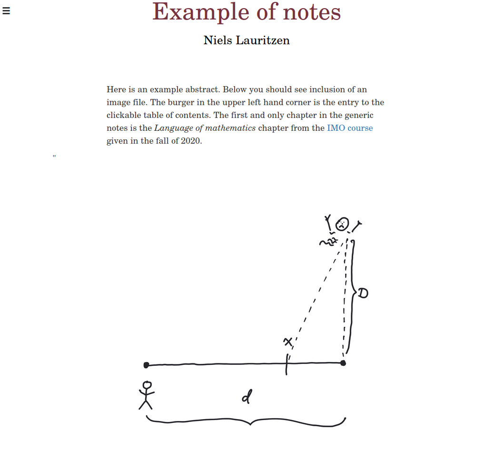
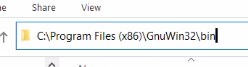

2Installation and use
2.1 Installation
Download the zip file https://nielsthl.github.io/QaDiL/QaDiL.zip. This zip file unzips intoQaDiL/
|__LICENSE
|__qadil/
|__Notes/
| |__Generic/
| |__IMO21/
2.1.1 Does the setup work out of the box?
If your setup with python and make works, the commandscd QaDiL/Notes/Generic
make

If you experience problems at this point,
you need to make sure that python3 and make are installed and that the supplied
Makefile is compatible with make on your system.Linux and MacOS are born with python3 and make installed. Windows needs to have make installed. This can be done by downloading and running the Setup program labeled Complete package, except sources from
2.2 Basic use
The project directory Generic has the following contentGeneric/
|__Makefile
|__index.tex
|__intro.tex
|__css/
| |__iLaTeXen.css
| |__index.css
|__img/
|__|__(image/png files here)
|__js/
|__|__bubble.js
|__|__openclosebuttons.js
|__|__orderquiz.js
|__|__quiz.js
|__|__sagecell.js
|__|__search.js
|__|__sidebar.js
2.2.1 Compilation
The compilation of the notes is governed by Makefile, which for Generic/ looks likeCOMPILER = ../../qadil/qadil.py
GENTOC = ../../qadil/gentoc.py
GENLABELS = ../../qadil/genlbls.py
all: book labels toc
book: index.html intro.html
labels:
python3 $(GENLABELS) .
toc:
python3 $(GENTOC) .
%.html: %.tex
python3 $<
clean:
rm -f *.html *.toc *.lbl *~
zip:
zip -r Generic.zip *.html img/ js/ css/
%.html: %.tex
python3 $<
2.3 Beginning and working on your own project
A simple way to begin or initialize your own project is to clone the Generic directory. Suppose you wish to start a project called Math101. The first step is to run the commandcp -R Generic Math101
xcopy /E /I Generic Math101
Generic/
|
Math101/
|__Makefile
|__index.tex
|__intro.tex
|__css/
| |__iLaTeXen.css
| |__index.css
|__img/
|__|__(image files/png files here)
|__js/
|__|__bubble.js
|__|__openclosebuttons.js
|__|__orderquiz.js
|__|__quiz.js
|__|__sagecell.js
|__|__search.js
|__|__sidebar.js
COMPILER = ../../qadil/qadil.py
GENTOC = ../../qadil/gentoc.py
GENLABELS = ../../qadil/genlbls.py
all: book labels toc
book: index.html chapter1.html chapter2.html
labels:
python3 $(GENLABELS) .
toc:
python3 $(GENTOC) .
%.html: %.tex
python3 $<
clean:
rm -f *.html *.toc *.lbl *~
zip:
zip -r Math101.zip *.html img/ js/ css/
2.4 Sharing and uploading your notes
When your notes are ready for publication on a web server, you go through the following steps in the project directory Math101 (as an example).make clean
make all
make zip
/var/www/Math101
https://edtech.dk/Math101
2.4.1 Publishing on GitHub
An account on GitHub automatically gives you access to your own web pages through the repository <username>.github.io. My username is nielsthl. To publish the notes Math101.zip (from above) so that they are accessible fromhttps://nielsthl.github.io/Math101